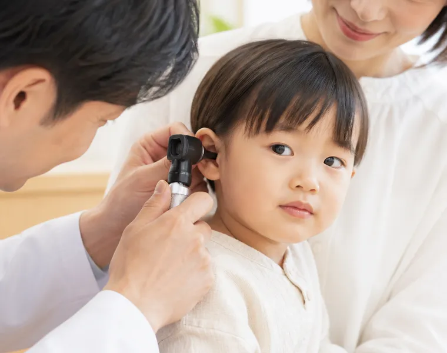

MEDICAL
診療案内
みみ・はな・のど、そしてお子さまの診療。
気になることがあれば、軽いうちにご相談ください。
みみの診療

こんなときにご相談ください
- 耳が痛い、押すと響く
- 耳がつまった感じが抜けない
- 音がこもって聞こえる、聞き返しが増えた
- 耳鳴りが続いて気になる
- 耳だれが出る、耳がかゆい
- 耳あかが硬くて自分では取れない
院内で行う主な検査
- 顕微鏡や内視鏡で鼓膜のようすを見る
- 聴力検査（防音室で音の聞こえ方をしらべる）
- 鼓膜の動きをしらべる検査
- めまいがあるときの平衡機能の確認
治療の流れ
- 困っていることと、いつから続いているかを伺います
- 耳の中を見て、必要な検査を選びます
- その日にわかったことと、これからの見通しをお伝えします
- 処置や内服の方針を一緒に決めます
- 次の来院日を決め、変化を見ながら続けます
はなの診療
こんなときにご相談ください
- 鼻がつまって口で息をしている
- 鼻水が長く続く、色や粘り気が変わった
- くしゃみが止まらない時期がある
- においがわかりにくい
- 鼻血が出やすい
- 頬や額のあたりが重い
院内で行う主な検査
- 内視鏡で鼻の奥のようすを見る
- アレルギーの傾向をしらべる血液検査
- 必要に応じた画像検査のご案内
- 鼻の通り具合の確認
治療の流れ
- 症状の出る時期や場面を伺います
- 鼻の中を見て、つまりの原因になっている場所をさがします
- 検査が要るかどうかを相談したうえで進めます
- 院内での処置と、家でできる手当てをお伝えします
- 季節による変化を見ながら通院の間隔を決めます
のどの診療
こんなときにご相談ください
- のどが痛い、飲み込むときにしみる
- 声がかすれる、出しにくい
- 飲み込んだあとに、のどに残る感じがする
- せきが長く続く
- いびきや寝ているときの息が気になる
- のどに何かがある感じが取れない
院内で行う主な検査
- 内視鏡でのどと声帯のようすを見る
- 首まわりのしこりやはれの確認
- 睡眠中の呼吸をしらべる検査のご案内
- 飲み込みの状態の確認
治療の流れ
- 声の使い方や生活のようすもあわせて伺います
- のどを見て、はれや炎症の広がりを確かめます
- 必要な検査を選び、その場でわかることをお伝えします
- 処置や内服、声の休め方について相談します
- 長引くときは、次に確かめることを決めて経過を見ます
こどもの診療
こんなときにご相談ください
- しきりに耳を触る、耳を痛がって夜に起きる
- 鼻水が長引いて機嫌がよくない
- 口をあけて寝ている、いびきをかく
- テレビの音が大きくなった、呼んでも反応が薄い
- 園や学校の健診で耳や鼻について言われた
- のどをよく痛がる
院内で行う主な検査
- 鼓膜のようすを見る（動画で一緒に確認できます）
- 年齢に合わせた聴力の検査
- 鼻の吸引処置
- 必要に応じた血液検査のご案内
治療の流れ
- ご家族から、家でのようすを伺います
- これから何をするかを、お子さま本人にも説明します
- 短く区切りながら診察と処置を行います
- 見えたものを画面でご覧いただき、方針をお伝えします
- 園や学校の予定に合わせて次の来院日を決めます
RESERVATION
予約方法
3つの入口があります。急な発熱やけがのときは、予約がなくても窓口でお声がけください。
-
24時間受付
Web予約
ご都合のよい時間帯を選んでお申し込みいただけます。夜間や休診日でも受け付けます。当日分の受付は、診療開始の1時間前から画面に出ます。
はじめての方は、お名前・生年月日・ご連絡先を入力いただきます。次回からは診察券の番号でお進みいただけます。
-
受付時間内
お電話
お名前と生年月日、症状のご相談内容をお聞きします。はじめての方や、Web予約の操作に迷われたときはこちらへ。
0538-72-3611受付時間 8:45〜12:15 ／ 14:20〜17:45
-
来院そのまま
当日受付
窓口で直接お受けします。予約の方が優先になるため、混み合う時間帯はお待ちいただくことがあります。受付順の目安は窓口でお伝えします。
初診の方は、健康保険証と、お持ちであればお薬の手帳をご用意ください。学校や園に提出する書類がある場合は、受付でその旨をお伝えいただくと当日中にお渡しできることがあります。